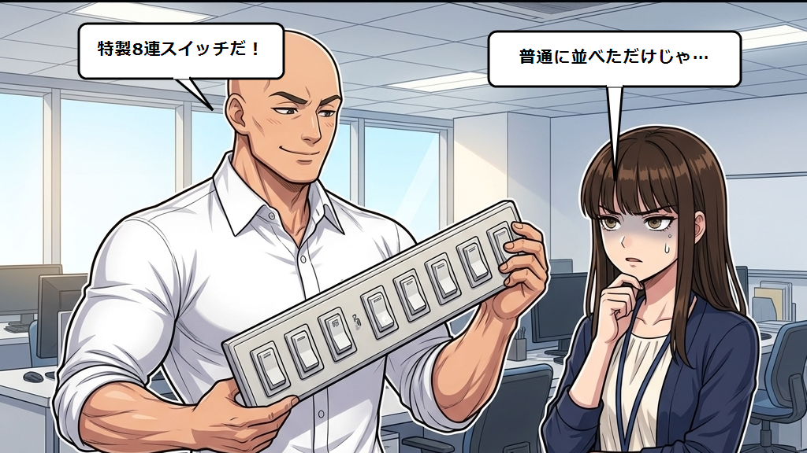
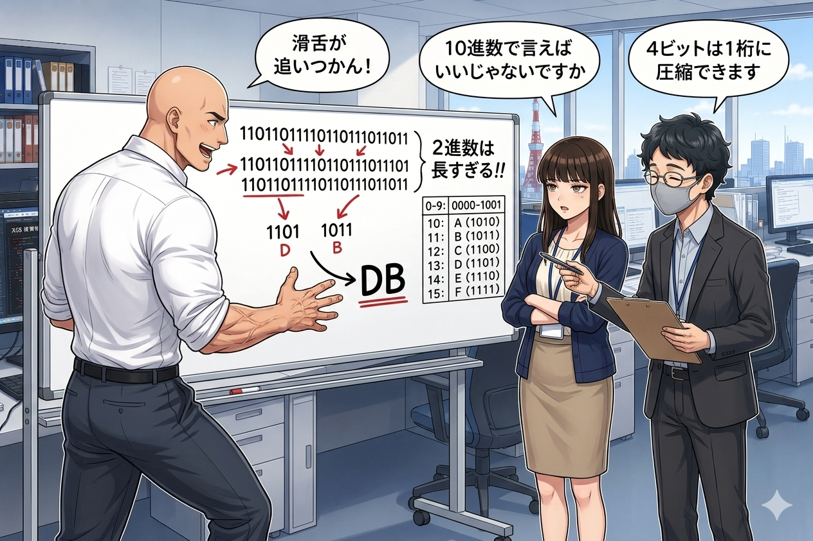
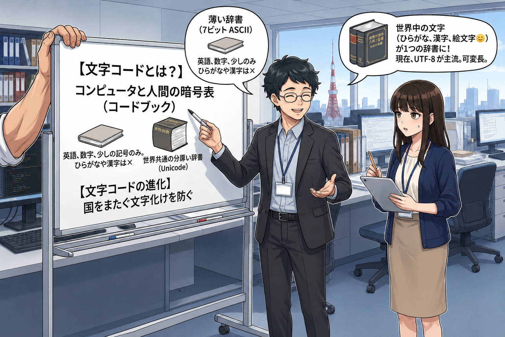

プロローグ：スイッチのONとOFF
配属されて数日。アオキ（25）は少しずつ情報システム部の雰囲気に慣れて……いなかった。
ある日の朝、アオキがオフィスに入ると、カチ、カチ、カチ、カチ……と激しい音が響いていた。
ミズダイ課長が、壁の照明スイッチをものすごい速さで連打していたのだ。
【ep02_01.png】スイッチのON/OFFを体現するミズダイ課長
ミズダイ
「アオキくん！ おはよう！ 見たまえ、このスイッチを！ 点いている（1）か、消えている（0）か！ 中間など存在しない！ 実に美しい二者択一だ！」
アオキ
「課長、おはようございます。朝から部屋の電気をチカチカさせるのやめてもらえます？ 目がチカチカして仕事になりません。」
ミズダイ
「フッ、これこそがデジタルの極意なのだ。物事を曖昧にせず、1か0かで白黒つける！ これがコンピュータの基本なのだよ！」
ホシノ
「おはようございます、アオキさん。課長は朝からコンピュータの基礎である『ビット』を表現してくださっているのですよ。」
アオキ
「ホシノさん！ おはようございます。また課長の奇行のフォローですか……。で、その『ビット』って何ですか？」
ホシノ
「はい、**ビット（Bit）**とは、コンピュータが扱う情報の最小単位のことです。課長がやっているように、スイッチが『ON（1）』か『OFF（0）』かの2つの状態を表します。
コンピュータの中身は非常に細かな電気の通り道でできており、電気が流れている状態を『1』、流れていない状態を『0』として認識しているのです。」
アオキ
「なるほど。じゃあ、スイッチが1個なら、表せる情報は『1』と『0』の2通りだけってことですね。」
ホシノ
「その通りです。では、スイッチが2個あったらどうなるでしょうか？」
アオキ
「ええと……『両方OFF』『左だけON』『右だけON』『両方ON』の4通りですかね。」
ホシノ
「大正解です！ 2進数で表すと `00`, `01`, `10`, `11` の4通りになります。スイッチが3個なら8通り（`000`〜`111`）、4個なら16通り（`0000`〜`1111`）と、スイッチが増えるたびに表せる情報が2倍に増えていきます。このように、0と1の組み合わせで数を数えていく方法を **2進数（Binary）** と呼びます。」
スイッチを8個集めて「1バイト」
アオキは自分のパソコンの画面を見つめた。
アオキ
「でも、0と1だけで、どうやって普段使っている文字や大きな数字を表しているんですか？ スイッチが数個じゃ全然足りないですよね。」
ホシノ
「そうですね。そこで、コンピュータはいくつかのスイッチをまとめてグループとして扱います。基本となるグループが、スイッチを8個集めた **バイト（Byte）** です。」

【ep02_02.png】8ビット（1バイト）のリモコンと256通りの表現
ミズダイ
「そう！ 1つのバイトは、8個のビットスイッチが横一列に並んだ特製リモコンのようなものだ！ どうだ、この圧倒的な8連スイッチ！」
アオキ
「普通に8個並んでるって言えばいいじゃないですか。で、8個集まると何通りになるんですか？」
ホシノ
「8ビットの場合、2の8乗で、**256通り**（`00000000`から`11111111`）の情報を表すことができます。この256通りという数が、英語のアルファベット（大文字・小文字で52文字）、数字（10文字）、記号、制御文字などをすべて割り当てるのにちょうど良いサイズだったのです。そのため、歴史的に『1バイト＝8ビット』がコンピュータで文字を扱う基本単位となりました。」
長すぎる2進数と「16進数」
ミズダイは鼻息を荒くしながら、ホワイトボードに0と1の羅列を書き殴った。
ミズダイ
「しかしアオキくん！ 2進数は人間には長すぎる！ 例えば、私の好きな今日のラッキーナンバーを2進数で表すと `11011011` だ！ いちいち『オン・オン・オフ・オン・オン・オフ・オン・オン』などと言っていたら、私の滑舌のクロック周波数が追いつかん！」
アオキ
「いや、普通に10進数で言えばいいじゃないですか。」
ホシノ
「ふふ、確かに10進数でもいいのですが、コンピュータの内部データ（2進数）と相性が悪く、変換が面倒になります。そこで登場するのが **16進数（Hexadecimal）** です。16進数は、`0`から`9`までの数字に加えて、`A`, `B`, `C`, `D`, `E`, `F` のアルファベットを使って、1つの桁で16通りの値を表す方法です。」

【ep02_03.png】2進数から16進数へのスッキリ変換
アオキ
「アルファベットを数字代わりに使うんですか？」
ホシノ
「はい。`A`は10、`B`は11……`F`は15を表します。実は、4ビット（16通り）の情報は、16進数の『1桁』でぴったり表現できます。つまり、1バイト（8ビット）の情報なら、16進数を使うとわずか『2桁』でスッキリ書き表せるのです。」
ミズダイ
「そう！ 先ほどの `11011011` は、4桁ずつに分けると `1101`（13＝D）と `1011`（11＝B）だから、16進数なら `DB` となる！ あの長ったらしかった0と1が、たったの2文字だ！ 非常にスマートだろう！」
アオキ
「なるほど、Webサイトのデザインとかでよく見るカラーコード（`#FF0000`など）もこれなんですね！」
ホシノ
「素晴らしい！ まさにそれです。`FF0000` は赤を表しますが、これも赤・緑・青の強さをそれぞれ1バイト（16進数2桁、00〜FF）で表現しているのですよ。」
スイッチの組み合わせと文字の辞書
アオキ
「なんとなく数字の表し方はわかりました。でも、『文字』はどうやって表しているんですか？ コンピュータの中身は0と1だけなんですよね？」
ホシノ
「はい、それは『この0と1の組み合わせは、この文字にする』という対応表を決めているからです。この対応表のことを **文字コード（Character Code）** と呼びます。いわば、コンピュータと人間の間にある暗号表（コードブック）ですね。」

【ep02_04.png】ASCIIとUnicodeの対比図
ミズダイ
「昔のアメリカ人が作った最初の暗号表が **ASCII（アスキー）** だ！ これは7ビット（実質1バイト）を使って、英数字や記号を登録した薄い辞書だな。」
ホシノ
「はい。ASCIIは英語圏で開発されたため、英語のアルファベットと少しの記号しか載っていません。そのため、日本語の『ひらがな』や『漢字』は登録されておらず、表示することができませんでした。」
アオキ
「あ、だから昔の海外のゲームとかで日本語が使えなかったり、文字化けしたりしてたんですね。」
ホシノ
「その通りです。日本語や他の言語も扱えるように、それぞれの国で独自の文字コード（Shift_JISやEUC-JPなど）が作られましたが、今度は国をまたぐと文字化けするという問題が発生しました。そこで、世界中のすべての文字にユニークな番号を割り当てて、1つの辞書にまとめた世界共通の規格が作られました。それが **Unicode（ユニコード）** です。」
ミズダイ
「Unicodeは世界共通！ 世界中のどんな言葉も、絵文字（😊）さえも、この分厚い世界百科事典（Unicode）があれば文字化けせずに表現できるのだ！」
ホシノ
「現在、Webサイトやシステムで最も広く使われている **UTF-8** という文字コードは、このUnicodeをコンピュータで効率的に扱うための仕組み（エンコード方式）の1つです。これがあるおかげで、アオキさんがスマホで送る絵文字も、海外の友達の画面で正しく表示されるのですよ。」
午前問題（科目A）にチャレンジ！
ホシノさんがホワイトボードに、2進数とデータ表現に関する過去問を書き出した！
【問題1】
2進数 10110110 を16進表記にしたものはどれか。
ア：A6
イ：B6
ウ：C6
エ：D6
アオキ
「ええと、2進数から16進数の変換ですね。さっきホシノさんが『4ビットの情報は16進数の1桁で表せる』って言っていました。
だから、`10110110` を半分に分けて、`1011` と `0110` にします。
後半の `0110` は、10進数で表すと 4×1 + 2×1 = 6 だから、16進数でもそのまま『6』。
前半の `1011` は、10進数で表すと 8×1 + 2×1 + 1×1 = 11。16進数では 10がA、11がBだから、これは『B』になります。
合わせると……正解は **『イのB6』** です！」
ホシノ
「大正解です！ 素晴らしい計算スピードですね、アオキさん。2進数から16進数への変換は、このように『4桁ずつに区切ってそれぞれ変換する』のが最も早くて正確です」
ミズダイ
「うむ！ 4桁は1桁！ プロテインも4倍濃縮すれば1本で済むのと同じ理屈だな！ 実に効率的だ！」
【問題2】
文字コードに関する記述のうち、適切なものはどれか。
ア：ASCIIは、日本語の漢字やひらがななどを表現するために開発された文字コードである。
イ：Unicodeは、世界中の様々な言語の文字を統一して扱うことができる文字コード規格である。
ウ：UTF-8は、すべての文字を常に16ビット（2バイト）の固定長で表現する文字コードである。
エ：Shift_JISは、英語圏での文字化けを防ぐために国際規格として制定された文字コードである。
アオキ
「文字コードの特徴を比べる問題ですね。
アは、ASCIIは英語用で漢字は載っていないから間違い。
ウは、UTF-8は文字によって長さが変わる可変長だから『常に16ビットの固定長』というのは間違い。
エは、Shift_JISは日本で考案されたもので、英語圏での文字化け防止用ではないから間違い。
ということは、世界共通の規格であると説明している **『イ』** が正解です！」
ホシノ
「大正解です！ 完璧ですね。UTF-8は『1〜4バイトの可変長』であるため、英数字は1バイト、日本語の漢字やひらがなは主に3バイトで表現されます。この『可変長』という特徴も非常によく狙われますので覚えておきましょう」
ミズダイ
「フハハ！ 2進数も文字コードも完全にマスターしたようだな！ これでアオキのデータ表現力も一段とキレを増したぞ！ よし、今日の研修を終えたご褒美に、2進数のお祝い（10101010）を叫びながらジムに行くか！」
アオキ
「2進数で叫ぶのもジムに行くのも遠慮しておきます……。でも、試験問題が本当に解けると達成感がありますね！」
0と1のデータ表現を身につけ、ITの理解がまた一歩深まったアオキ。情シス部メンバーとの賑やかな学びは、これからも加速していく！
（第2話：2進数とデータ表現 編 完）